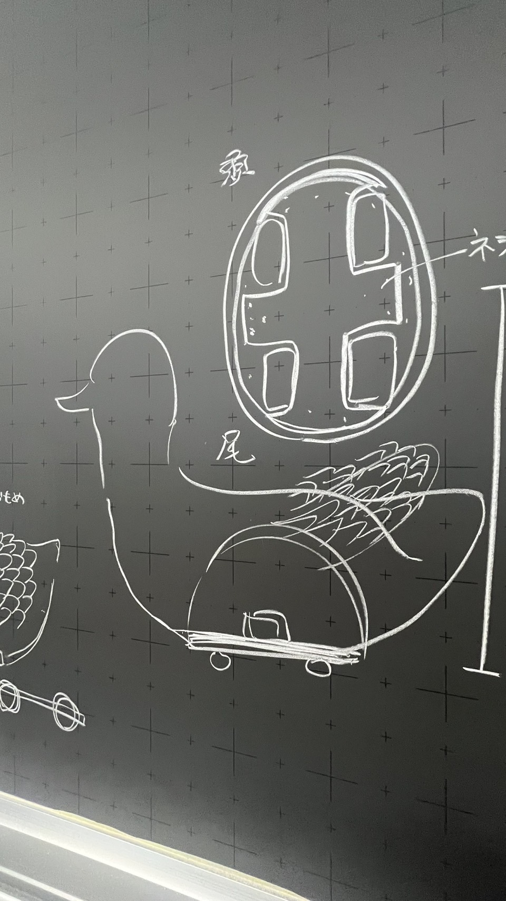
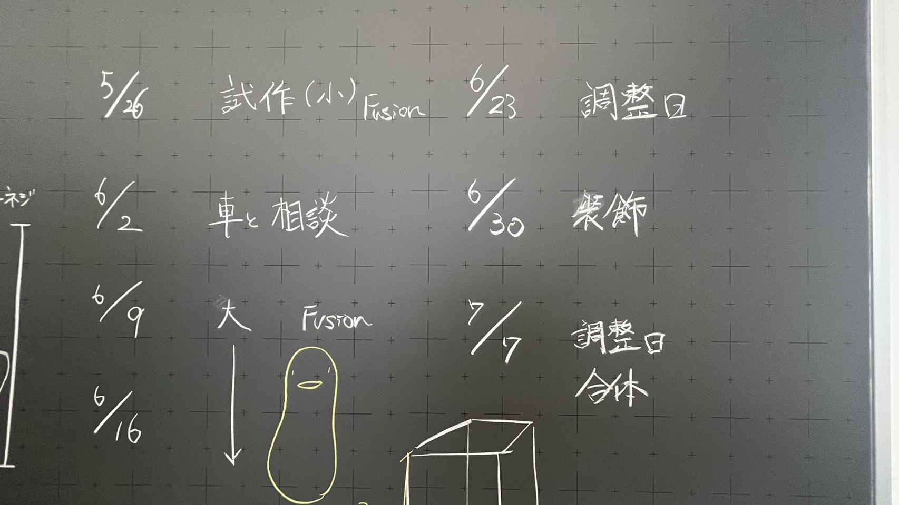
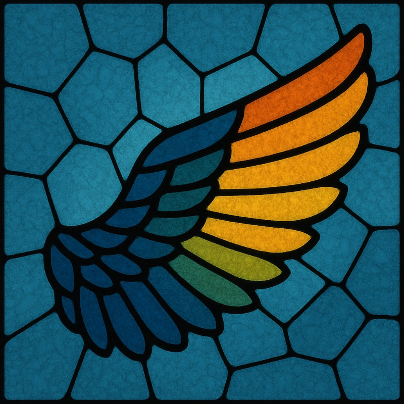
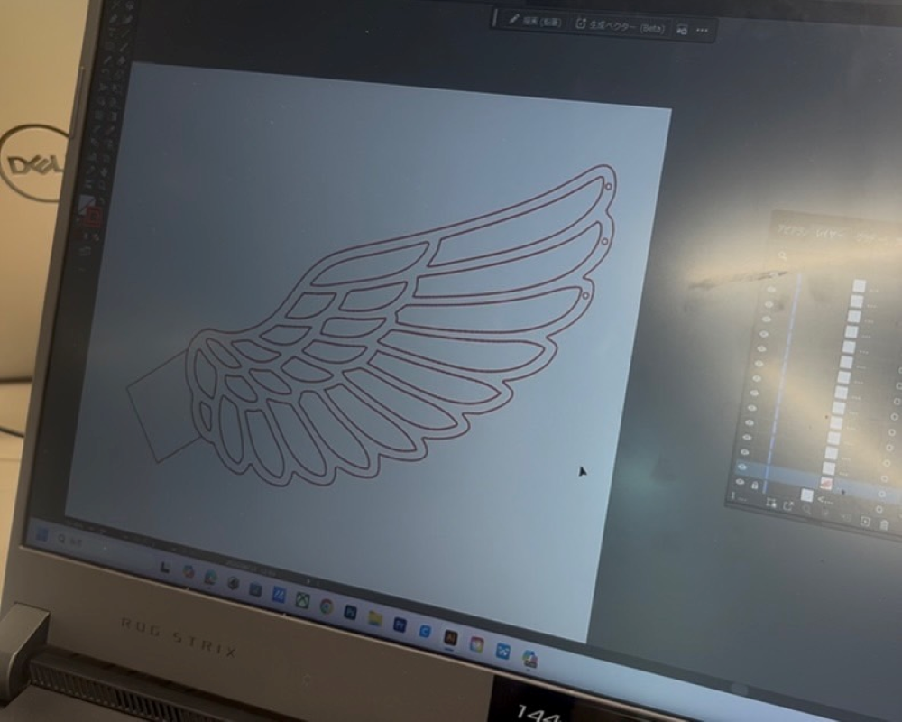
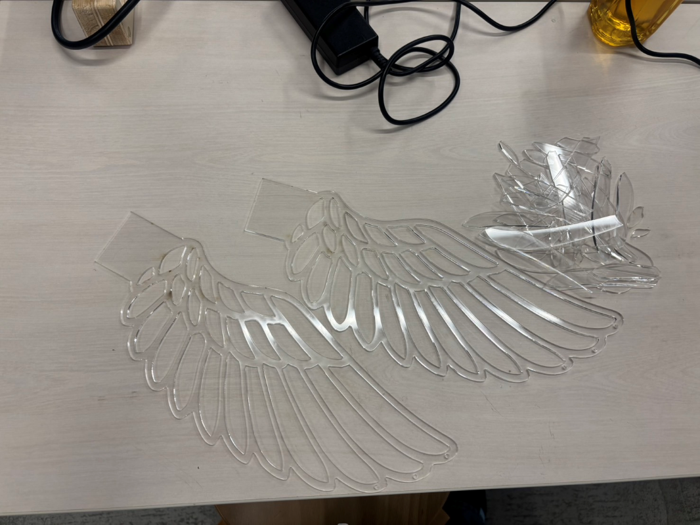
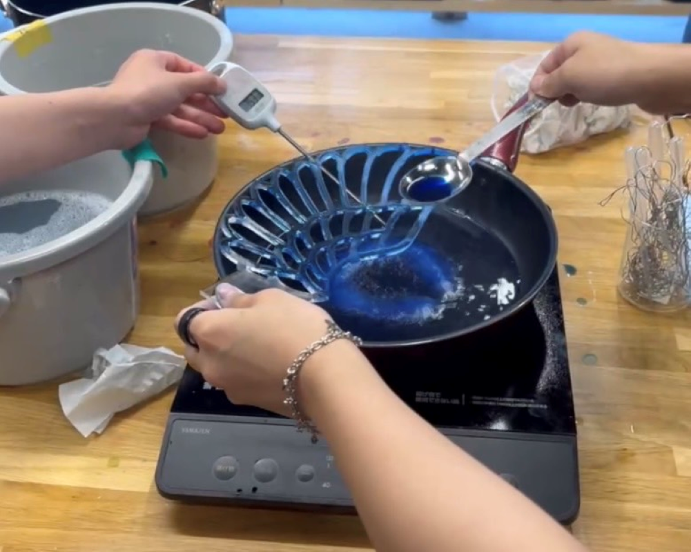

プロジェクトノート
世界一のアヒル【本体】



最終課題は「世界一のアヒル」をテーマに取り組んでいく。
本体、背景、車、光＆音の４つのグループに分かれて制作する。
■＝考えないといけないこと、疑問など ●＝具体的にやること →＝やったこと
■＝本体の素材を決める
●＝走らせるため軽い素材（3Dプリンター）を選ぶ
■＝本体の中にスピーカーを入れるスペースを作る
●＝本体を2つに分けて作ってスペースを作る、重さに偏りが出ないように密度やデザインを工夫する。
■＝「世界一」にするには？
●＝本体に色を付けるだけでなく、サングラスやリボン羽の装飾にこだわって「かわいさ」「かっこよさ」のあるアヒルを作る！
私はアヒルの翼を作成した。chatGTPに「ステンドグラス風の鳥の翼」のデザインを考えてもらい、その画像をもとにレーザーカッターで翼を作った。
 
 
■＝アヒルのデザインはどうする？
●＝アヒルは3Dプリンターで作ったため、アクリルを使って透明感のあるデザインにする
→＝3㎜のアクリルを使ってステンドグラス風のデザインにした。
■＝色はどうやってつける？
●＝染色して透明感のある色にする
→＝暖色系と寒色系の色を使って染色した
■＝本体全体の横幅と縦幅が制限されているため、アクリルでどのように立体感を出す？
●＝熱で形を曲げて立体感を出す
■＝動きのある翼にするには
●＝チャームを付けたら動くときに揺れてかわいさが出る
■＝翼の作り方は？
●＝くり抜いたパーツをそれぞれで染めてくっつける。
→＝アクリルを染色してパーツをくっつけた。
■＝染色だとムラができてしまう。
●＝UVプリンターだと綺麗なグラデーションが作れる。
■＝くっつけてから翼を曲げるとなるとパーツがとれてしまう？。
●＝くり抜かないデザインにする。
→＝アクリルを掘ることでステンドグラスの模様を作る。
■＝チャームのデザインは？
●＝ネックレスのチェーンをつけてキラキラさせる
■＝翼はどのように曲げる？
●＝熱でアクリルを自由自在に曲げる。
→＝幅の規定を超えないように本体と合わせながら調節。
■＝翼の装飾は？
→＝星のパーツとチェーンを付けてピアスっぽくする。
■＝アヒルと翼は何でくっつける？
●＝グルーガンか瞬間接着剤を使う。
本体作成は終了したためインスタ投稿用の画像作成をした。
chatgptに作成をしてもらった
「学习everskies 的像素画风，模仿形体，脸部 五官表情，服饰和发型的面法。用附件图中人 物的发型，衣服和配饰来画一张人物插图。背景白底，只要一个完整的人物」